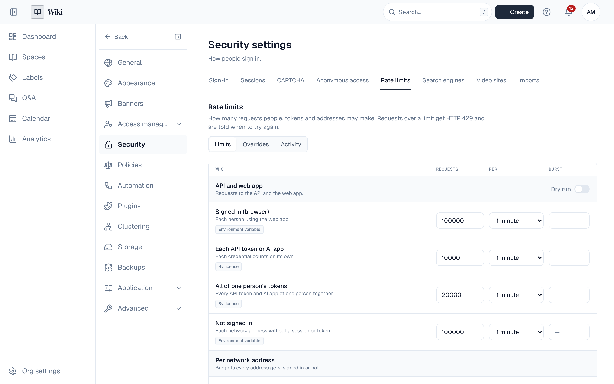

Every request takes from a budget: one per caller and kind of traffic. A caller over its budget gets 429 Too Many Requests and is told when to try again. Limits are shared by every server of a cluster through Redis. Administrators change them in Settings → Security → Rate limits without restarting, and give one role, organization, user, API token or AI app a different budget.
1. Who counts against what
| Traffic | Signed in (browser) | Each API token or AI app | All of one person's tokens | Not signed in (per address) |
|---|---|---|---|---|
| API and web app (/api) | 600 a minute (RATE_LIMIT) | By license: 1,000 / 5,000 / 10,000 a minute (Standard / Pro / Enterprise) | By license: 2,000 / 10,000 / 20,000 a minute | 60 a minute (RATE_LIMIT_ANON) |
- A token or AI app has its own budget and takes from its owner's total, so many tokens can't add up to more than the total. A token's traffic doesn't use up its owner's browser budget.
- A budget is a rate and a burst: a caller may send the burst back to back, then the steady rate. There is no doubling at minute boundaries.
- A rate of 0 means no limit.
Per network address, whoever is calling:
| Limit | Default | What it counts |
|---|---|---|
| Flood guard | 10,000 a minute (RATE_LIMIT_PREAUTH) | Every request from one address, before sign-in is checked. Networks you list under Networks the flood guard skips (such as your build agents' subnets) aren't checked; their requests still count against the other limits. |
| Live updates | 20 a minute (RATE_LIMIT_WS) | New WebSocket connections |
| Plugin endpoint requests per client address | 600 a minute (RATE_LIMIT) | Requests to plugins' endpoints (such as MCP servers), before the caller is known |
| Failed sign-ins and unknown tokens | 20 in 15 minutes (AUTH_IP_RATE_LIMIT, AUTH_IP_RATE_WINDOW) | Wrong passwords, and API or OAuth tokens that were never issued. An address over it is refused until the window ends. Expired or revoked tokens don't count. |
AI agents have their own budgets too: see Plugin endpoints.
2. When a limit is reached
The answer is 429 with:
- Retry-After: the seconds to wait (exact, not always 60).
- RateLimit-Policy and RateLimit (the IETF format, on every limited response, not only 429): the budget, what's left and when it refills, for example "api";q=600;w=60 and "api";r=0;t=7.
- A JSON error with class and retry_after_seconds (mcp_rate_limited on MCP servers).
Scripts calling the API should wait and try again on 429, using Retry-After.
3. Changing the limits
The Rate limits tab of Settings → Security (settings:write) has four views: Limits, Overrides, Activity and Downloads. Changed limits are saved with the page's Save, together with anything changed on the other Security tabs.

- Limits — One table lists every budget, grouped by kind of traffic. Each shows its value and where it comes from: Saved, Environment variable, By license or Built in. Change the requests, period and burst, or select Use default.
- Try it first — Turn on Dry run for a kind of traffic: requests over its limits are counted in Activity but not refused. RATE_LIMIT_DRY_RUN=true does this for every limit from the start.
- Save — Every server applies the change within 30 seconds (at once with Redis), without a restart.
The environment variables are only defaults: a saved value replaces them on every server. RATE_LIMIT_SETUP (30 a minute per address in the setup wizard and recovery page) can only be set in the environment.
Saving raises security.rate_limits.update, which policies can block. Every change is in the audit log.
4. Overrides
An override gives one role, organization, user, API token or AI app a different budget on one kind of traffic. Add them on the Overrides tab, or where the thing lives:
- Profile → API tokens: the gauge button on a token.
- Settings → Applications: Rate limits on an AI app.
- Users → a user → Rate limits.
- The Activity tab: Add override on a caller that was limited.
| Setting | What it does |
|---|---|
| Applies to and Which one | Token (its number), AI app (its client ID), user (their number), organization (its number) or role (its name) |
| Route class | API and web app, or Plugin endpoints (AI agents) |
| Counts | Browser sessions and tokens, browser sessions only, or API tokens and AI apps only |
| Budget | Requests, period and burst |
| Dry run | Count requests over this budget without refusing them |
| Exempt from rate limits | No limit at all (Enterprise) |
| Note | Why it exists, for other administrators |
- The most specific override wins: the token or AI app, then the user, the organization, the role, then the installation's limits. An override for browser sessions only or tokens only beats one for both at the same level.
- Ceilings: an override may raise a budget to 2× the installation's limit on Standard, 10× on Pro, without limit on Enterprise. The form shows both values. After a license downgrade, higher overrides are capped and exempt ones apply their budget.
- Organization administrators (api_tokens:admin) see only the Rate limits tab, with only Overrides, for their own organization: at most the installation's limits, and never exempt.
- Overrides raise security.rate_limit_override.create, .update and .delete, which policies can block.
Everyone sees their own budgets under Profile → API tokens → Your rate limits: their browser budget, each token's, their total, and their AI app connections and MCP keys.
5. Activity
The Activity tab shows how many requests were limited (or would have been, in dry run) in the last 1 to 24 hours, per kind of traffic, and the callers limited most. Being limited isn't an event; it's only counted here. When Redis is unavailable the counts are from the server that answered only, and the tab says so.
6. Plugin endpoints (AI agents)
- Each AI app connection or MCP key may make 120 requests a minute (MCP_RATE_LIMIT) across every plugin endpoint (MCP server). Overrides on Plugin endpoints (AI agents) change it per AI app, user, organization or role. Over it: 429 mcp_rate_limited.
- One agent's share of a plugin: a plugin has calls per second for everyone together; one AI app connection or MCP key may use 50% of them (PLUGIN_CALLER_SHARE_PCT), so one agent can't use up a plugin.
- A plugin's page (Settings → Plugins → the plugin → Call limits) sets its calls per second, each caller's share, and calls per second for a particular AI app instead of the share. Use defaults goes back to the plugin's and the installation's values.
The tab also lists Package traffic and Download quotas: they come from the platform the Wiki is built on, which other products use to serve packages. The Wiki has no package traffic, so they never count anything here.
7. Redis and clusters
- With Redis, every server shares the same budgets, and changes reach every server at once.
- Redis can be one server (redis://, rediss://), a Sentinel group (redis+sentinel://) or a Redis Cluster (redis+cluster://): see Single Node & Cluster.
- If Redis is unavailable, each server counts on its own until it's back, so N servers allow up to N× a budget. Sign-in keeps working; failed attempts are counted per server. Nothing counted is lost when Redis returns. The Wiki logs one warning when Redis goes and one message when it's back.
8. Environment variables
Defaults until saved in Settings → Security → Rate limits. Set the same values on every server.
| Variable | Default | What |
|---|---|---|
| RATE_LIMIT | 600 | API requests a minute per signed-in person (browser), and plugin endpoint requests per client address |
| RATE_LIMIT_ANON | 60 | API requests a minute per address without a session or token |
| RATE_LIMIT_PREAUTH | 10000 | Flood guard: requests a minute per address, before sign-in |
| RATE_LIMIT_WS | 20 | New WebSocket connections a minute per address |
| RATE_LIMIT_SETUP | 30 | Requests a minute per address in setup and recovery mode (environment only) |
| RATE_LIMIT_DRY_RUN | false | Count requests over the limits instead of refusing them |
| AUTH_IP_RATE_LIMIT, AUTH_IP_RATE_WINDOW | 20, 15m | Failed sign-ins and unknown tokens per address before it is refused |
| MCP_RATE_LIMIT | 120 | Plugin endpoint (MCP) requests a minute per AI app connection or MCP key |
| PLUGIN_CALLER_SHARE_PCT | 50 | Share of a plugin's calls per second one AI agent may use (1 to 100) |
An invalid value stops the server at startup with a message naming the variable.